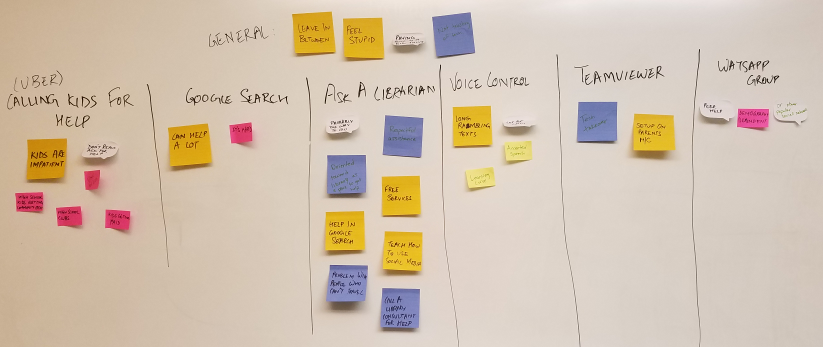

INTERACTION DESIGN PROJECT: TECAID
Role -
Interaction designer
Overview


Followed the entire user-centered design process involving interviews, sketches,
personas and prototypes and came up with an app Tecaid.
What is Tecaid?
Tecaid is an app that helps baby boomers request for timely technical assistance from local neighborhood
high school students looking for community service credit.
Process followed:
Problem Statement – Baby boomers struggling to complete daily tasks through the use of technology and
in turn, reaching out to their children as tech support.
Competitive analysis – I looked at various competitors working on solving the same problem like
SkillfulSenior.com, Teamviewer, etc. Each one of them assumed that either the elderly person has some knowledge of computer
or has someone to help them in case of technical urgency.
Sketches – I started brainstorming the potential solutions by sketching them. Some of the solutions were asking local
children for help, doing google search, asking a librarian, etc.
Scenario – I came up with a scenario for all my solutions where I thought it could be used. Below is the scenario
for my actual solution.
Personas: – To analyse my solution and making sure that I am designing for my target user during every phase of the design process, I came up with a persona.
It would also help me at the end to measure the success of the product.
Interviews: – I conducted interviews with a few baby boomers and some important things surfaced.
1. Use of watsApp to connect the baby boomers was not encouraged a lot as it was very much dependent on demographics.
2. The population in this range wants to get their work done as quickly and as much without frustration as possible and they like to ask
for help. For this they consider, library as one of the best resource.
3. One of the interviewees suggested that there would be a security issue with the primary school children, so why not consider
high school children looking for community service credit.
Thus I shifted my focus to connecting baby boomers to high school children as by the above reasoning, the high school students would have
much more motivation to help and also the security issue is somewhat eliminated.
Brainstorming: While brainstorming with 2 of my peers:
a. The idea about asking a librarian stuck to us the most as it is free and essentially the work gets delegated to someone else.
b. Teaching google search idea came off as something which was very hard to implement but which can have very high impact.
c. Using Teamviewer to help solve the problem had problems such as what happens when the issue is with connection of physical devices.

Paper prototype: I did the QOC analysis, to evaluate the features I want to put in the app and came up with 3 potential
solutions and made paper prototypes out of them.
I tested my paper prototype with the same baby boomers and my peers to get their feedback. After several round of iterations,
I was able to finalise a solution. Check out the video for the paper prototype here.
Digital prototype: After that I converted the paper prototype into digital prototype to be
developed into an app. Check out the video here.
Did it work?
1. When I showed my app to 3 of the target users, they were extremely excited about the app. They wanted to have it as soon as possible as they said there is a real need for it.
2. Even checking with my peers, I received acknowledgement saying that this is definitely an issue that needs attention and my concept is something that addresses it really well.
Learnings from the process:
1. Focus on the need: The solution might change but the need would not.
2. Always keep your user in mind while designing in every phase of the process.
3. Getting feedback from target users is extremely important and there feedback supersedes any other type of feedback.
4. Sketch your ideas in order to get people quickly on the same page as yourself.